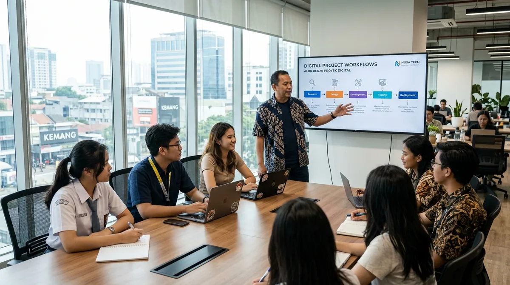
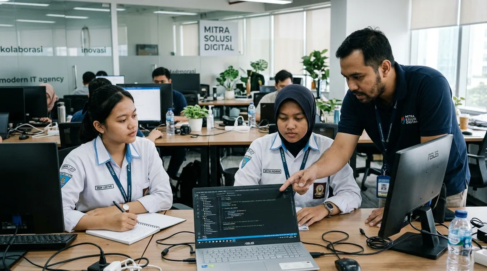
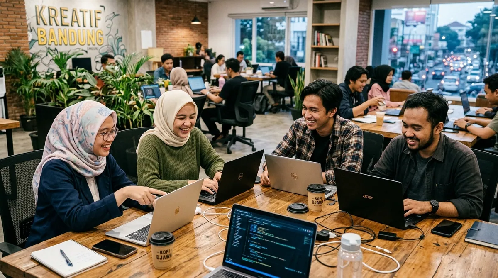
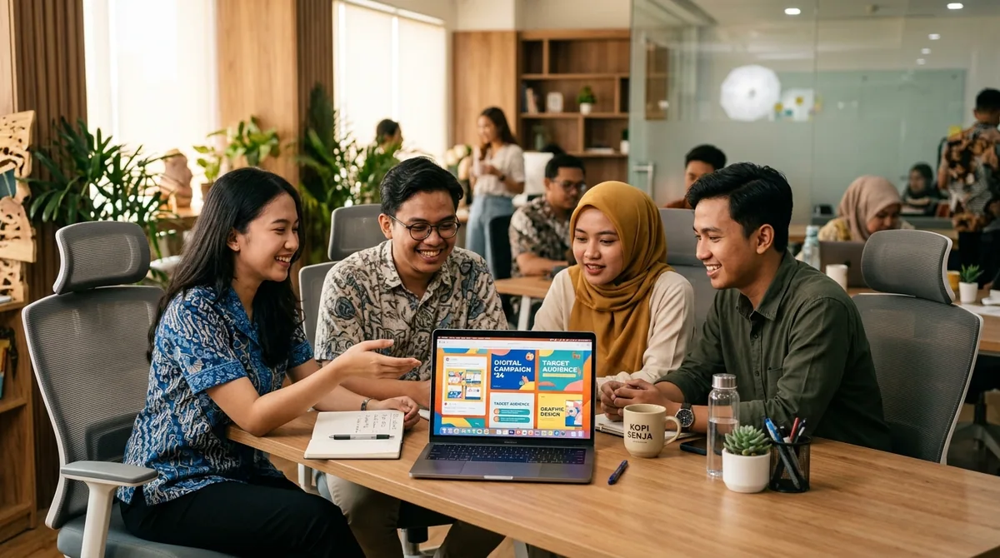
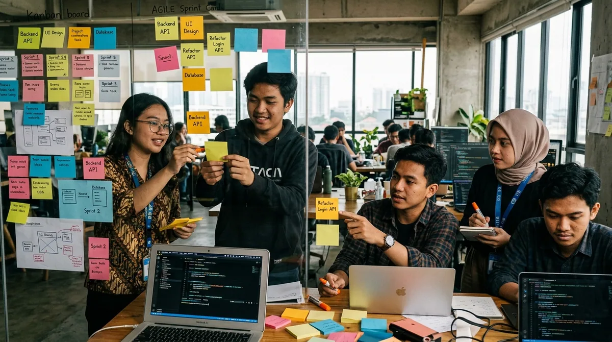
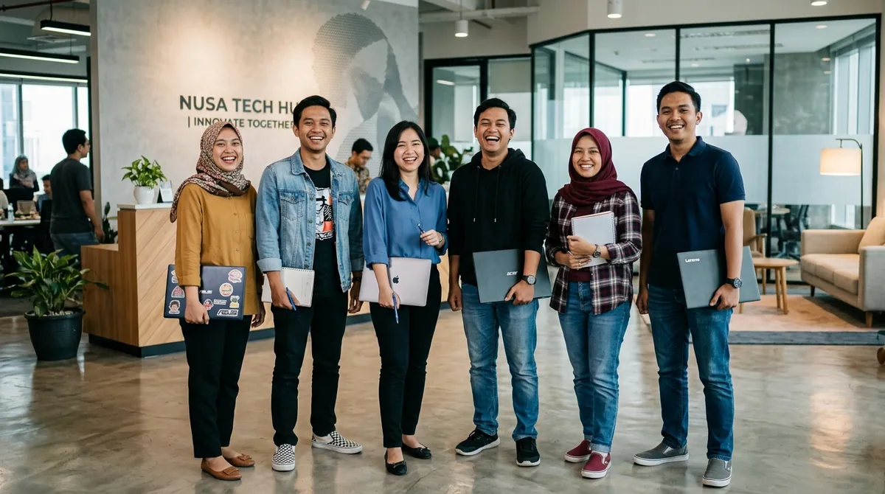

Learning process
Peserta belajar materi inti dan tools, lalu berlatih lewat tugas terbimbing sebelum masuk ke project.
Pilih program yang paling sesuai: dari PKL siswa SMK sampai team project. Ini gambaran lengkap tujuan, aktivitas, dan outputnya.

Program magang dan PKL digital kami dirancang secara khusus untuk menjembatani dunia pendidikan dengan standar kebutuhan industri modern melalui pendekatan berbasis praktik langsung (learning by doing).
Peserta dibimbing memilih bidang spesialisasi yang diminati, menguasai materi dasar dan tools industri, hingga menyelesaikan proyek nyata dengan pendampingan mentor profesional secara berkala.
Bimbingan & evaluasi rutin dari praktisi industri.
Hasil proyek nyata yang siap ditunjukkan ke industri.
Durasi dan biaya masih berupa placeholder — isi sesuai kebijakan penyelenggara.
3 - 6 Bulan
Gratis

Siswa SMK yang menjalani Praktik Kerja Lapangan sesuai kurikulum sekolah.
Daftar program ini3 - 6 Bulan
Gratis

Mahasiswa yang membutuhkan magang untuk kuliah atau pengembangan karier.
Daftar program ini3 - 6 Bulan
Gratis

Pemula atau fresh graduate yang ingin mencoba dunia kerja digital.
Daftar program ini3 - 6 Bulan
Gratis

Peserta yang belajar paling baik dengan langsung mengerjakan project.
Daftar program ini3 - 6 Bulan
Gratis

Kelompok peserta (mis. satu tim sekolah/kampus) yang ingin mengerjakan project bersama.
Daftar program ini3 - 6 Bulan
Gratis
Peserta belajar materi inti dan tools, lalu berlatih lewat tugas terbimbing sebelum masuk ke project.
Project menyerupai pekerjaan nyata, dikerjakan bertahap dengan target dan tenggat yang jelas.
Perkembangan dan hasil project ditinjau secara berkala dan diberi umpan balik.
Hasil kerja disusun menjadi portofolio yang siap ditunjukkan.
Peserta mempresentasikan hasil project dan mendapatkan arahan langkah berikutnya.
Memahami kebutuhan peserta, sekolah, kampus, dan bidang yang ingin dipelajari.
Peserta memilih bidang atau jurusan yang sesuai dengan minat dan kebutuhan.
Peserta mendapatkan pengenalan program, tools, workflow, dan aturan kerja.
Peserta mulai mempelajari skill melalui materi dan latihan.
Peserta mulai mengerjakan project yang menyerupai pekerjaan nyata.
Peserta bekerja dalam tim dan belajar membagi tugas.
Project dan perkembangan peserta dievaluasi.
Peserta menyusun hasil pekerjaan menjadi portofolio.
Peserta mempresentasikan hasil project.
Peserta mendapatkan arahan untuk pengembangan skill dan langkah berikutnya.
Bangun skill, kerjakan project nyata, dan mulai siapkan portofolio untuk menghadapi dunia kerja digital.